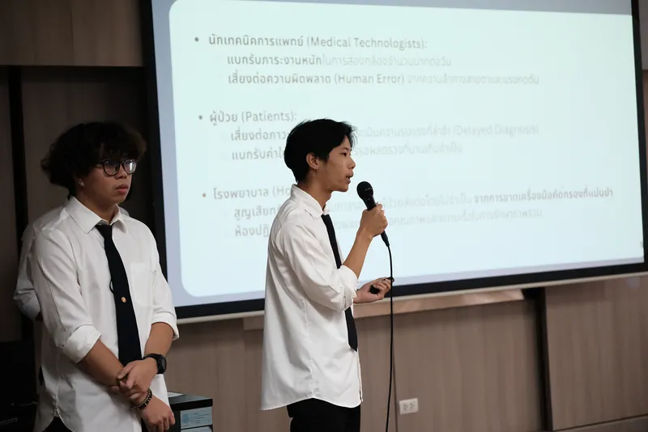
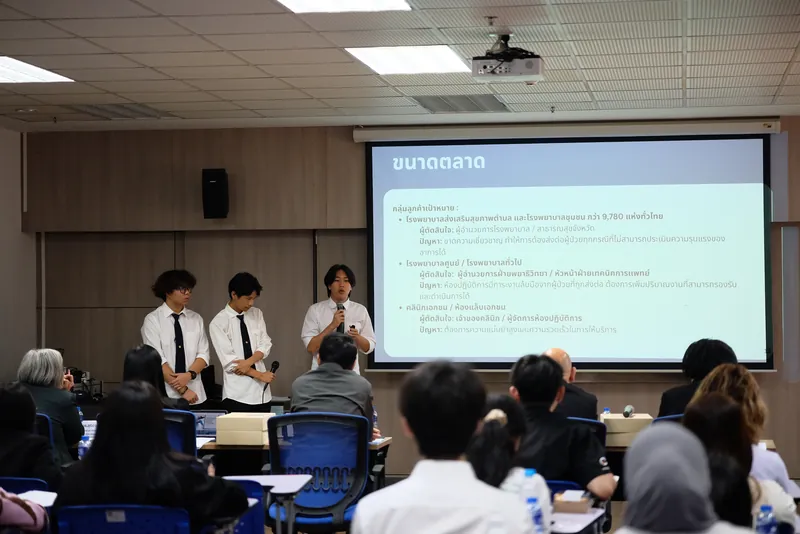

Project overview · KU MedAI Innovation Challenge 2026 · Concept & pitch
TDET-Scan
แนวคิดกล้องจุลทรรศน์อัจฉริยะสำหรับคัดกรองความรุนแรงของธาลัสซีเมียและไข้เลือดออก ครอบคลุมการค้นคว้าปัญหา ออกแบบระบบ และต้นแบบหน้าจอ โดยไม่ได้พัฒนาโมเดลหรือแอปจริง

The idea
TDET-Scan (Thalassemia Dengue Expert Tracking) คือแนวคิด “กล้องจุลทรรศน์อัจฉริยะ” (Smart Digital Microscope) แบบ All-in-One ที่ผสาน AI ไว้ในตัวกล้อง ใช้ส่องสไลด์ตามปกติได้ และเปิดโหมด AI เพื่อวิเคราะห์สเมียร์เลือดได้ทันที แม้ไม่มีอินเทอร์เน็ต เพื่อช่วยประเมินความรุนแรงของธาลัสซีเมียและไข้เลือดออก
ปัญหาที่สไลด์ระบุคือ ชุดตรวจแบบเร็ว (Rapid Test) ยืนยันการติดเชื้อในเชิงคุณภาพได้ แต่ประเมินระดับความรุนแรงเชิงปริมาณไม่ได้ เช่น ระดับเกล็ดเลือดวิกฤต ทำให้แพทย์ขาดข้อมูลสำหรับคัดแยกผู้ป่วย และต้องรอผลสเมียร์เลือดจากห้องปฏิบัติการซึ่งพึ่งพานักเทคนิคการแพทย์ที่มีจำนวนจำกัด ผู้มีส่วนได้ส่วนเสียที่สไลด์วิเคราะห์คือนักเทคนิคการแพทย์ ผู้ป่วย และโรงพยาบาล
My role
ผมเป็นหัวหน้าทีม (Team Leader) และ Solution Designer ของ TDET Team ช่วงกุมภาพันธ์—มีนาคม 2569 งานครอบคลุมการค้นคว้าปัญหา การสังเคราะห์งานวิจัยทางคลินิก การออกแบบ system architecture และต้นแบบหน้าจอ (Figma) และการนำเสนอแนวคิด smart microscope ต่อคณะกรรมการ
Approach
งานออกแบบเริ่มจากการสังเคราะห์งานวิจัยทางคลินิกเกี่ยวกับการวินิจฉัยธาลัสซีเมียและไข้เลือดออก เพื่อหาข้อจำกัดของชุดตรวจแบบเร็ว (Rapid Test) ซึ่งยืนยันการติดเชื้อได้เชิงคุณภาพ แต่ประเมินระดับความรุนแรงของโรคไม่ได้
จากนั้นทบทวนงานวิจัยที่ใช้สถาปัตยกรรม CNN, ResNet, DenseNet และ YOLO (สไลด์ยกตัวอย่าง VGG19 และ YOLOv8) เพื่อประเมินความเป็นไปได้ทางเทคนิคของการวิเคราะห์สเมียร์เลือดแบบอัตโนมัติ พบว่างานวิเคราะห์ภาพเซลล์ส่วนใหญ่ใช้ Deep Learning แต่ยังไม่พบงานที่รวมทุกอย่างไว้ในระบบ AI วิเคราะห์สเมียร์เลือดบนตัวกล้องจุลทรรศน์
ผลของการทบทวนนำไปสู่การออกแบบ workflow หลายขั้นตอน (multi-stage) ที่ประกอบด้วย YOLO ตรวจจับเซลล์ → CNN จำแนกลักษณะทางสัณฐานวิทยา → AI สร้างรายงาน → นักเทคนิคการแพทย์ตรวจสอบความถูกต้อง โดยประยุกต์แนวคิดเหล่านี้กับอุปกรณ์ขนาดเล็กที่ประมวลผลในตัวเครื่อง
Slide & preprocess
นำสไลด์สเมียร์เลือดเข้ากล้อง TDET-Scan และปรับคุณภาพภาพก่อนเข้าโมเดล
Blood smearCell detection
YOLO ตรวจจับตำแหน่งเซลล์ในภาพ รองรับหลายเซลล์ในภาพเดียว
YOLOMorphology classification
CNN จำแนกลักษณะทางสัณฐานวิทยาของเซลล์
CNNAI-generated report
สรุปเป็นรายงาน เช่น จำนวนเซลล์ สัดส่วนความผิดปกติ และ confidence score
AI reportTechnologist verification
นักเทคนิคการแพทย์ตรวจสอบความถูกต้องก่อนใช้งานจริง
Human-in-the-loop
สไลด์วางหลักการออกแบบไว้ว่า AI เป็นผู้ช่วยคัดกรอง ไม่ใช่ผู้วินิจฉัยแทนแพทย์ ผลการประเมินต้องได้รับการยืนยันจากนักเทคนิคการแพทย์หรือแพทย์เสมอ ประมวลผลภายในเครื่องและแสดงเฉพาะรหัสบาร์โค้ดหรือหมายเลข HN แทนชื่อผู้ป่วย และเสนอแนวทางลดอคติด้วยชุดข้อมูลผสมที่รวมข้อมูลเลือดของคนเอเชีย พร้อมการจำลองความหลากหลายของสี ความสว่าง และความคมชัดของภาพสไลด์
ทั้งหมดนี้เป็นกระบวนการออกแบบแนวคิดและประเมินความเป็นไปได้จากงานวิจัยเดิม ไม่ใช่ผลจากโมเดลที่ทีมฝึกหรือทดสอบเอง
Why it stayed a concept
โครงการนี้ถูกจัดทำเพื่อการนำเสนอในงาน KU MedAI Innovation Challenge 2026 งานของทีมจบที่การค้นคว้าปัญหา การออกแบบระบบ ต้นแบบหน้าจอ และการนำเสนอ ไม่ได้ฝึกโมเดลหรือพัฒนาแอปและอุปกรณ์จริง ภาพอุปกรณ์ในสไลด์สร้างขึ้นเพื่อประกอบการนำเสนอเท่านั้น ตามหมายเหตุที่ระบุไว้ในสไลด์
สำหรับโครงการที่พัฒนาและทดสอบโมเดลจริงในงานภาพเซลล์เม็ดเลือด ดู BloodScope
TDET-Scan ไม่มีโมเดลที่ฝึกแล้ว อุปกรณ์ที่ใช้งานได้ หรือผลการทดสอบให้รายงาน สไลด์มีการประมาณต้นทุนและขนาดตลาดของแนวคิด ซึ่งเป็นประมาณการเชิงธุรกิจ ไม่ใช่ผลที่วัดได้ จึงไม่นำตัวเลขมาแสดงในหน้านี้
Deck & evidence

